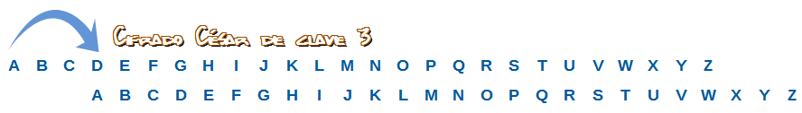

1. ¿Cómo ocultaban sus mensajes los romanos?
 Cuentan los antiguos escritos romanos que el emperador Julio César utilizaba este tipo de encriptación para cifrar sus mensajes militares y que sus enemigos no pudieran leerlos si capturaban al mensajero.
Cuentan los antiguos escritos romanos que el emperador Julio César utilizaba este tipo de encriptación para cifrar sus mensajes militares y que sus enemigos no pudieran leerlos si capturaban al mensajero.
El cifrado César consiste en sustituir cada letra del abecedario por una letra desplazada un número determinado de posiciones. Este número de desplazamientos es la clave o rotación (ROT). Por ejemplo, si desplazamos 3 posiciones utilizamos ROT3, reemplazaríamos la letra A con la D, la B con la E, y así sucesivamente hasta sustituir la X por la A, la Y por la B y la Z por la C. En este ejemplo la «clave» es 3 (ROT3) porque hemos desplazado 3 posiciones. Este sistema es un ejemplo de lo que se conoce como cifrado monoalfabético.

Por ejemplo: CIFRADO en clave 3 pasaría a ser FLIUDGR.
Para un alfabeto de 26 letras, el número de claves distintas es 26! = 403291461126605635584000000. Descifrar un mensaje probando con todas las claves es, en la práctica, imposible. No obstante los cifrados monoalfabéticos son sencillos de romper como veremos más adelante.
Qué bien hubiera venido conocer el cifrado César para el juego del espía del apartado anterior. Quizás eres más inteligente de lo que crees y ya llegaste a una idea parecida para el juego.